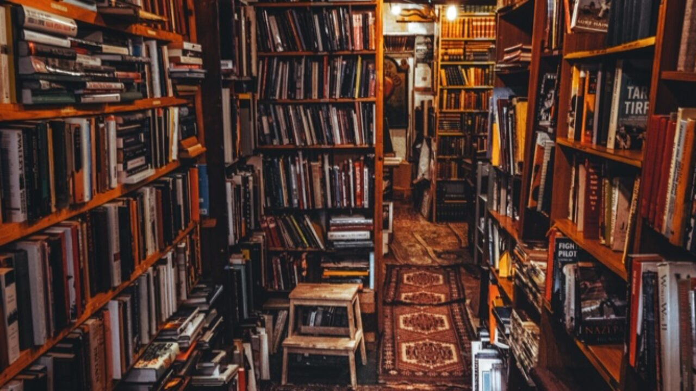
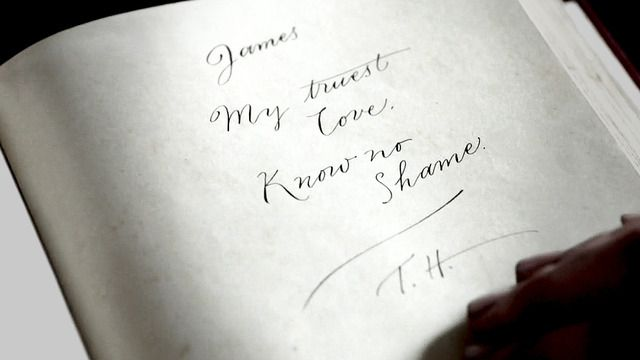
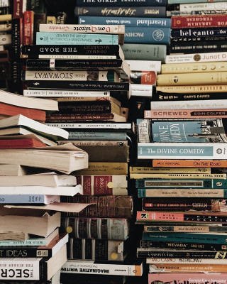

Origins
A book is a conversation. Between the author and the reader, surely. The author tells the reader a story. The reader listens. But it doesn't have to stop there.
Have you ever picked up a book and found the previous owner has annotated it? Left a love note on the inside cover? Written a joke that makes no sense in a scratchy scrawl? Have you ever wondered where they may be now? And when you began reading, have you ever stopped and considered how fortunate you are to have shared this beautiful experience with someone you've never even met?
Every time you read a book, you leave a little bit of yourself between its pages. This is the guiding principle of The Last Word. The stories between stories. The warmth, the romance, the heartbreak, and the tragedy, and not just what happened in print.

The Last Word is more than just a bookshop. It's an entire world, waiting to be explored.
We hope you enjoy your stay.